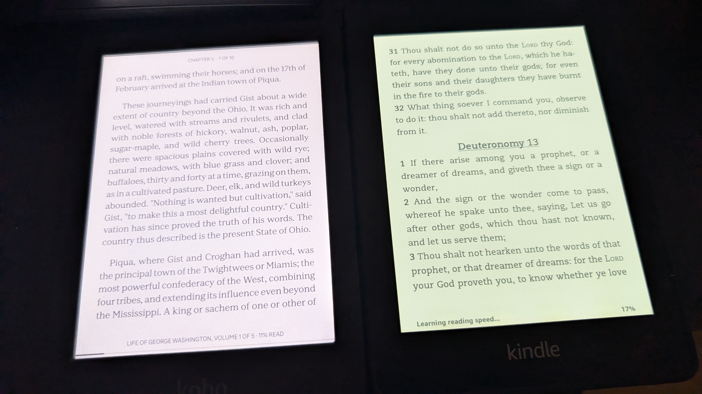
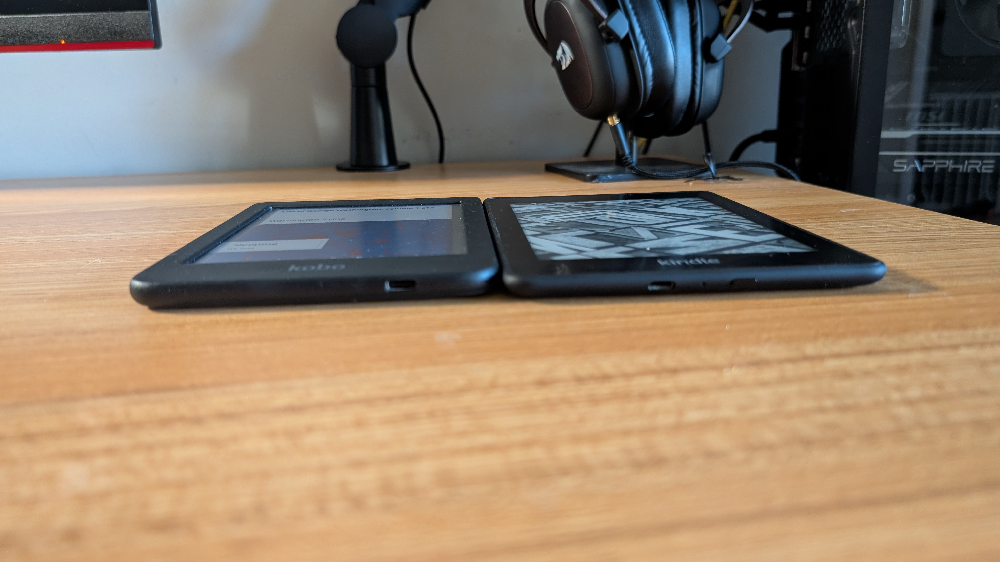
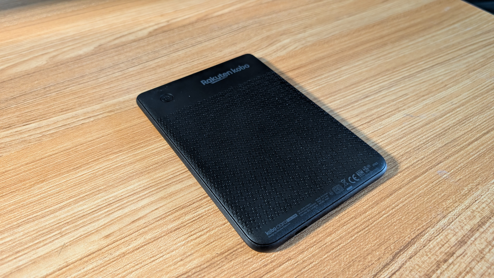
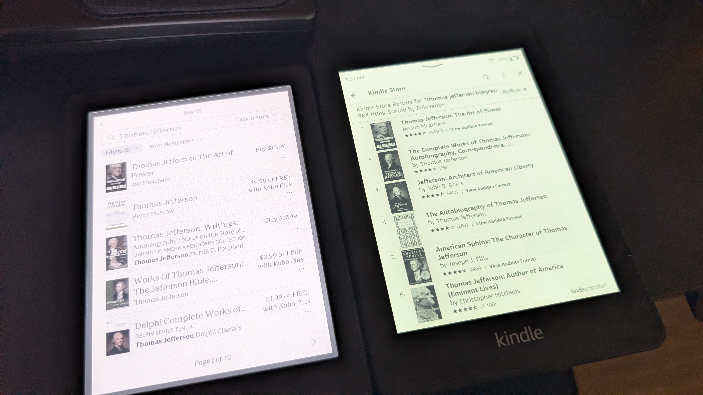
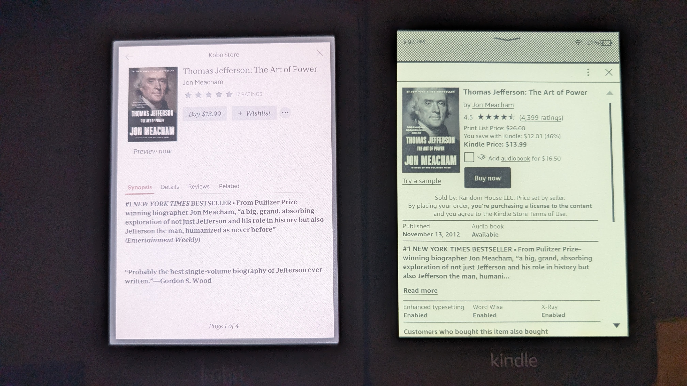
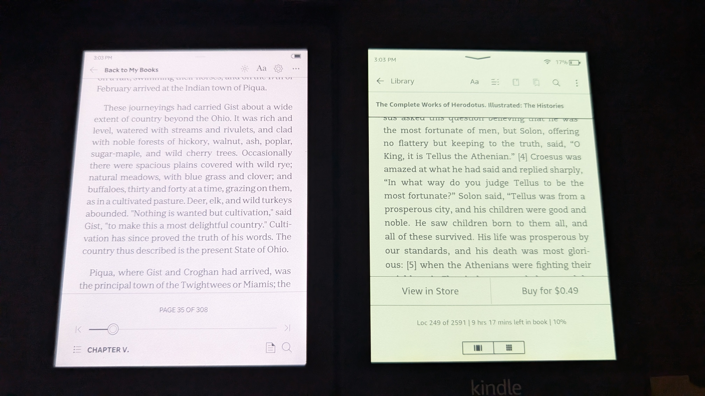

Review: Making the Switch to the Kobo Clara Color from the Amazon Ecosystem
November 26, 2025

As an avid reader who has been locked into the Amazon Kindle ecosystem for years—most recently utilizing a reliable, albeit aging, 10th-generation Paperwhite—I found myself facing a dilemma rooted in proprietary file formats and digital rights management (DRM). While e-readers are fantastic for carrying a vast library of free, public-domain titles from sources like Project Gutenberg, Amazon’s historically closed system created friction.
The need for seamless ePub compatibility—the industry standard outside of Amazon's walled garden—was the driving force behind my recent upgrade decision. I wanted a device that respects universal formats without cumbersome workarounds. Enter the Kobo Clara Color.
The Hardware Deep Dive
The Kobo Clara Color arrives with competitive specs that bring it up to par with current-generation e-readers, though perhaps not exceeding them in every category.
Key Specs at a Glance:
- Processor: Dual-core 2.0 GHz CPU
- Display: 6-inch Carta E Ink touchscreen with 300 PPI resolution
- Storage: 16GB internal memory
However, I noted a subtle visual distinction. Despite technical comparisons confirming the resolution is high-DPI, the screen occasionally presents a slightly 'off' appearance compared to my older monochrome Kindle screen, though this vanishes entirely when engrossed in a book. Almost like looking through a screen, if that makes sense.
Design Grievances and Praises
A minor design choice that feels somewhat dated is the inset screen. The flush screen-to-bezel design found on modern Kindles offers a sleeker, more premium feel, making the Kobo's design feel a generation behind. This is a small trade-off, likely a result of the Clara Color being positioned as a budget-friendly option.
The build quality is solid black plastic with a texturized back panel for better grip. The physical power button placement is a point of contention; situated on the top-right rear of the device, it's prone to accidental activation when the device is placed in a tight pocket. A case seems essential to mitigate this minor ergonomic oversight.
The Software Experience and the ePub Factor
The user interface across both Kobo and Kindle platforms is largely similar: functional, intuitive, and designed for focused reading. The differences are mostly cosmetic, relating to button placement and menu organization. For example, the chapter menu button sits at the bottom left on the Kobo, while Amazon places it at the top of the screen.
The Kobo does have a leg up in display customization, offering a ComfortLight PRO system with adjustable color temperature (warm vs. cool light), a feature absent in my specific older Kindle, though standard in newer models.
The real differentiator—the "killer feature" for my use case—is native ePub support. Amazon, historically, favored its proprietary format with restrictive DRM capabilities (and the capacity, theoretically, to remotely modify or remove purchased titles). While Kindle now supports ePub files via the "Send to Kindle" email service, the drag-and-drop file management experience on the Kobo is seamless.
This universal format compatibility streamlines access to a world of free, public-domain literature from sources like Project Gutenberg, where accessing clean, functional MOBI files was previously a headache. With the Kobo, I simply plug in the USB-C cable and transfer files en masse without error.
  Verdict: A Solid, Open-Ecosystem Alternative
The decision to switch wasn't strictly necessary, as my old Kindle still functioned, and Amazon has grudgingly updated its support for ePubs. However, the Kobo Clara Color delivers a friction-free experience for those who value digital ownership and open standards over the Amazon ecosystem's convenience.
It's a robust, solid device with minor hardware quirks (inset screen, power button placement) offset by excellent software flexibility. Performance is generally good, with the expected minor page-turn latency common to all E Ink technology. If you prioritize easy file management and native ePub support, the Kobo Clara Color is an excellent choice.